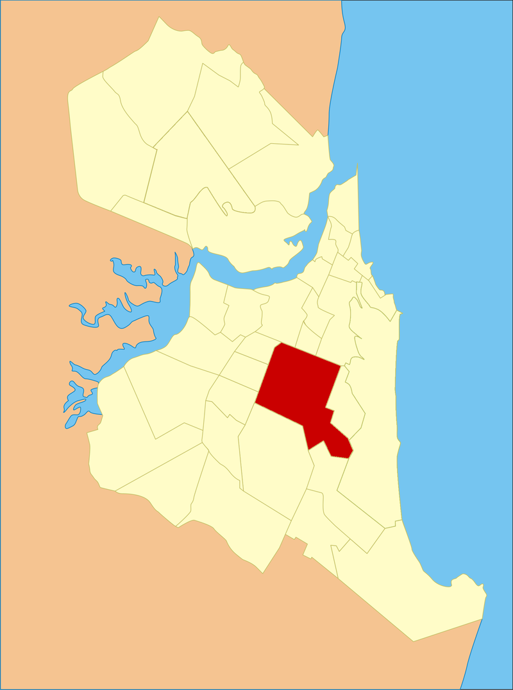

Nome do Bairro: Lagoa Nova

O bairro de Lagoa Nova, fica situada na região sul da cidade do Natal/RN. Limita-se ao norte com os bairros do Tirol, Lagoa Seca e Alecrim; Localizado na zona sul, ao sul com os bairros de Candelária e Capim Macio. Um dos acessos principais são pelas Avenidas Sen. Salgado Filho e Prudente de Morais.
Quantidade de Pessoas
Neste bairro, segundo Wikipedia tem aproximadamente 35.838 habitantes.
Um ponto positivo
Como ponto positivo, podemos citar a localização do bairro.
Um ponto negativo
Já como ponto negativo, o trânsito nessa região é um caos.
Empresas e atrações
-
Arena das Dunas - A arena foi viabilizada através de uma parceria público-privada entre a OAS Engenharia e o governo do estado, tendo a finalidade precípua de sustentar a candidatura da capital potiguar para a Copa do Mundo FIFA de 2014, de onde recebeu quatro partidas do evento mundial. Posteriormente projetada para ter uso variado, se viabilizando financeiramente, o complexo tem a capacidade de 31.375 espectadores. Durante a Copa do Mundo, a arena contou com arquibancadas flexíveis, que permitiu a expansão para 42 mil assentos. A arquitetura do estádio, inspirada nas dunas do Rio Grande do Norte, foi projetada pela empresa estadunidense Populous. Ótima área de lazer nos finais de semana!
- Kart - uma boa opção de kart
- Shopping e Supermercados - ótimas opções com baixo deslocamento
- Fotos do Bairro
- Contato